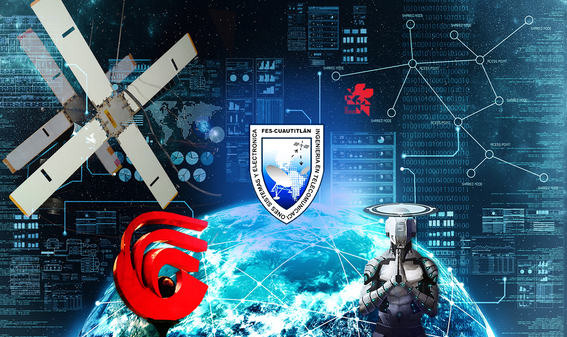

La ciencia puede divertirnos y fascinarnos, pero es la Ingeniería la que cambia el mundo.
— Isaac Asimov


Tabla de contenido
- Datos Estadísticos
- Descripción
- Videos
- Características del aspirante
- Condiciones particulares
- Perfiles Intermedios
- Perfil del primer ciclo
- Perfil del segundo ciclo
- Perfil del tercer ciclo
- Perfil del egresado
- Campo y mercado de trabajo
Datos Estadísticos
En el ciclo escolar 2019-2020 el total de aspirantes a ingresar a esta licenciatura fue de 1,068. La oferta de lugares disponibles para esta carrera fue de 200, por lo que de cada 4 estudiantes que demandaron la carrera ingresó 1. Del total de alumnos de primer ingreso 81% son mujeres y 19% hombres.
Descripción
El ingeniero en telecomunicaciones, sistemas y electrónica es el profesional capaz de integrar, diseñar, innovar y desarrollar sistemas de telecomunicaciones para la transmisión y recepción de voz, datos, audio y video.
Su formación le permite hacer más eficaces los procesos productivos y de servicio, y participar en las áreas relacionadas con la generación e implementación de tecnología en electrónica analógica y digital; y con la administración de software, bases de datos y sistemas operativos para la automatización y el control de sistemas de telecomunicaciones
A través de su actividad impulsa el desarrollo sustentable de la tecnología en telecomunicaciones, los sistemas y la electrónica, por lo que será vital que conozca las necesidades del país para favorecer así la educación, el desarrollo comercial y la integración social de la población marginada y, en especial, la de las áreas rurales.
Video
Testimonial ITSE
Características del aspirante
Los aspirantes deberán tener conocimientos básicos de Ciencias Físico Matemáticas en el bachillerato, además de poseer conocimiento sólidos en las asignaturas de matemáticas y de física; además deberán tener facilidad en el manejo de lenguajes numéricos y de fórmulas, capacidad para relacionarse armónicamente con otras personas y habilidad en la comunicación oral y escrita; capacidad de observación, análisis, síntesis, orden, y sistemátización.
Tener un espíritu creativo e innovador, visión tecnológica y capacidad de liderazgo.
Condiciones particulares
Al ser una carrera de alto rendimiento, se recomienda que los alumnos dediquen tiempo completo a los estudios para cumplir con las actividades académicas propias.
Perfiles Intermedios
Perfil del primer ciclo
Introducirá al estudiante en la disciplina, le proporcionará los elementos teórico-conceptuales y metodológicos básicos de la ingeniería, además adquirirá los principios y los conocimientos esenciales de las ciencias básicas que sustentan los principios de la ingeniería para su formación, así como las herramientas y habilidades mínimas que debe poseer el ingeniero en telecomunicaciones, sistemas y electrónica.
Perfil del segundo ciclo
Tendrá la capacidad para tomar decisiones y resolver los problemas profesionales que enfrenta el ingeniero en telecomunicaciones, sistemas y electrónica.
Perfil del tercer ciclo
Adquirirá los conocimientos y la capacidad necesaria para realizar el adecuado manejo, análisis e interpretación de la información de uno de los siguientes campos de profundización disciplinaria: Sistemas Digitales, Comunicaciones, Sistemas de Información, Sistemas Analógicos, Ingeniería de Control y Mecatrónica. También desarrollará las habilidades para desempeñar trabajo interdisciplinario.
Perfil del egresado
El egresado de la Licenciatura en Ingeniería en Telecomunicaciones, Sistemas y Electrónica de la Facultad de Estudios Superiores Cuautitlán, tendrá:
- Conocimientos en las áreas físico-matemáticas, computación, redes y bases de datos, comunicaciones y electrónica.
- Conocimientos en la generación, manejo y transporte o comunicación de la información electrónica, así como las dedicadas a la generación, mejora y aplicación del software y hardware, requiriéndose una formación sólida en las áreas de sistemas computacionales y de datos, así como en inteligencia computacional, comunicaciones, electrónica y control.
- Capacidad para realizar el manejo, análisis e interpretación de la información electrónica, de herramientas computacionales con aplicaciones en la ingeniería para la toma de decisiones, y la habilidad para adaptar, diseñar y/o desarrollar sistemas de comunicación, controlando las áreas del manejo de información, desarrollando programas de seguridad, así como sistemas de automatización y robótica, así como los conocimientos para formar y dirigir su propia empresa o ejercer la profesión de forma independiente.
- Capacidad de diseñar nuevos sistemas de comunicación, analizar las propiedades físicas de los medios de trasmisión, así como instalar, operar y mantener equipos y redes de difusión de radio y televisión, redes telefónicas fijas (pares y coaxiales de cobre), teléfonos móviles y globales mediante enlaces satelitales, redes de comunicación de datos privadas y públicas, entre otras.
Campo y mercado de trabajo
El campo de trabajo del ingeniero en telecomunicaciones, sistemas y electrónica es muy amplio y versátil, e incluye entre otras, empresas relacionadas con áreas de sistemas telefónicos, satelitales, de radio, microondas, automatización, así como las de redes digitales para telecomunicaciones, sistemas y redes informáticas.
El ingeniero en telecomunicaciones, sistemas y electrónica juega un papel importante ya que está formado y capacitado para diseñar e instalar equipo de telecomunicaciones (emisor, receptor), o bien en el diseño de mecanismos de trasmisión, modificación de la señal, decodificación o tolerancia de una degradación de la señal significativa.